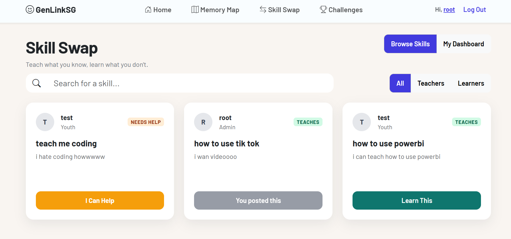
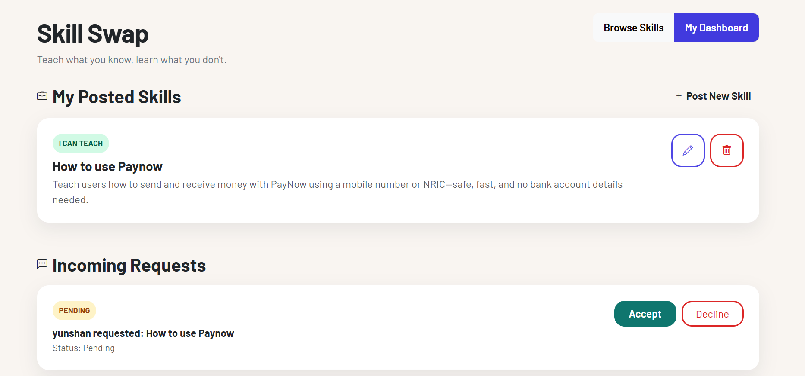
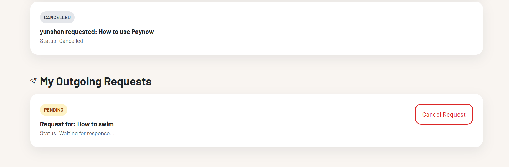
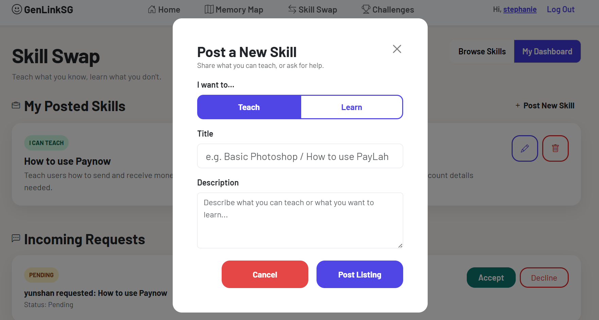

Web application · Full-stack contribution
GenLinkSG — SkillSwap
A youth–senior skill exchange experience, built around simple listings, clear requests, and an approachable interface.

Original project screenshot. This case study focuses on the SkillSwap feature.
The problem
GenLinkSG is a platform for connecting youths and seniors. Its SkillSwap feature gives users a place to offer what they can teach, discover what they want to learn, and request an exchange.
The design challenge was to make the flow clear for people with different levels of digital confidence: browsing a skill should naturally lead to understanding the listing and taking the next step.
My contribution
My work covered the SkillSwap experience across the interface, Flask routes, templates, and database structure.
- Application logic: Flask routes and Jinja2 templates for listing pages, listing details, and request submission.
- Data structure: SQLite tables for users, listings, requests, and categories.
- Listing management: A dashboard to create, read, update, and delete skill listings, with validation.
- Interface: Responsive Bootstrap layouts, reusable components, and consistent visual styling.
From browsing to a swap
- Find a skillBrowse teach / learn listings and narrow the selection by category or keyword.
- Understand the listingRead the skill details, availability, and other information before deciding to connect.
- Request an exchangeSubmit a swap request through a clear user flow.
- Manage the interactionReview request status and manage listings from the dashboard.
Design choices & learning
I used readable typography, larger buttons, and simple content structure to support a mixed-age audience. Consistent cards and spacing help users scan listings without having to learn a new pattern on every screen.
What this project taught me: a feature is more than its interface. The routes, templates, data model, and request state need to work together so that the user always understands what happens next.
A next iteration
I would test the experience with both youth and senior users, then refine labels and validation messages based on where they hesitate. This is a proposed improvement, rather than a completed usability study.
A closer look
View larger 

View larger

View larger

View larger

View largerLet's build something useful.
I'm open to IT internships where I can contribute, learn from a team, and turn ideas into practical work.